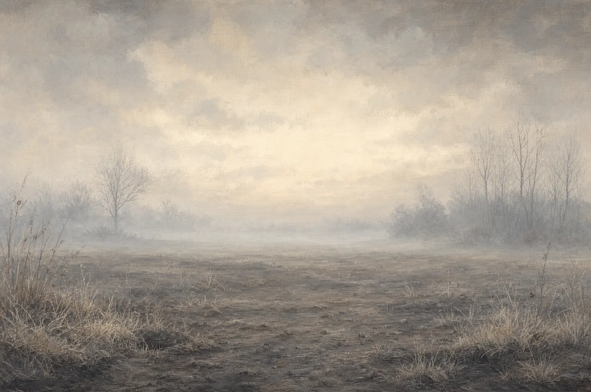
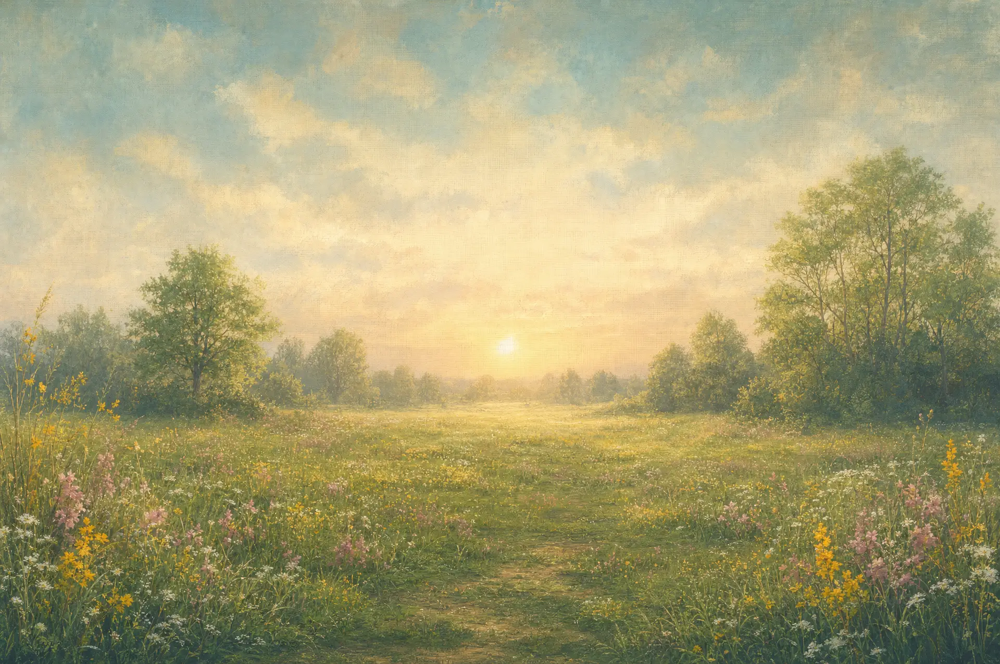
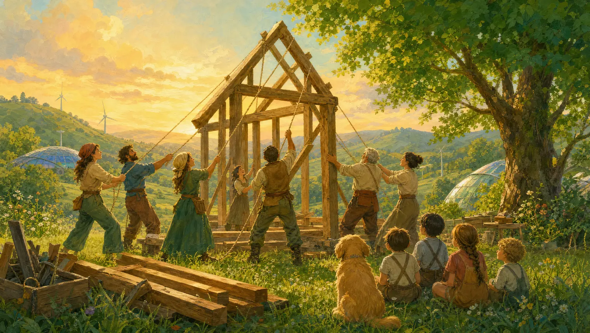

What if we built for
connection?
✦
✦
✦
✦
✦


Illuminate a gray thought to give it hope
The arc of this page — gray to green, separation to hope — is borrowed from Charles Eisenstein's
The More Beautiful World Our Hearts Knows Is Possible
.

Visit the library of projects that inspire me →